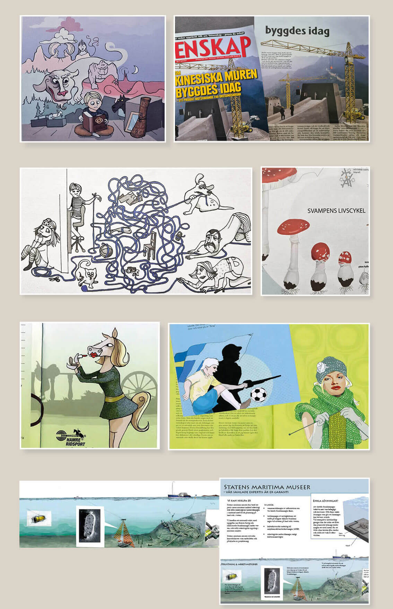

Illustrationer
Exempel på kunder och uppdrag:
Den oändliga historien, tävlingsbidrag / Allt om vetenskap, illustration kinesiska muren / illustration till lärobok i tyska / karaktärer i en hästfamilj för ridsportsbutik / artikelillustrationer / illustrerad folder för Statens Maritima Museer
